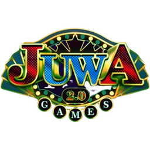

Juwa
Three ways to play Juwa
Fortune Lion, Deep Sea Predator, and Buffalo Keno share a lobby. What you do after you open each game is quite different.


Fire Kirin
Inside two Fire Kirin fish games
Baby Octopus sends you out over a coral reef. Arc of Templar puts a knight among sea monsters. Both belong to Fire Kirin’s fish arcade.

Orion Stars
Where to find keno on Orion Stars
Orion Stars groups keno with table games. Fish tables, slots, and Links each have a separate place in its game lineup.

River Sweeps
A closer look at River Sweeps fishing
Fishing appears in two places on River Sweeps: the multiplayer games themselves and the fish tournament featured on River777.

Juwa 2.0
Which games do the two Juwas share?
Epic Summer appears in both collections. Lightning Respin and Goblin Bros are two names to look for when browsing Juwa 2.0.

Milky Way
Ocean King and the Milky Way lineup
Ocean King, Golden Toad, and Buffalo Thunder appear on a Milky Way distributor’s game list. Here’s how to find your bearings when browsing the platform.

Game Vault 999
Three Game Vault covers worth a closer look
A prospector, a leprechaun, and an Egyptian queen give three Game Vault titles very different faces. Each picture carries a clue to the full game name.